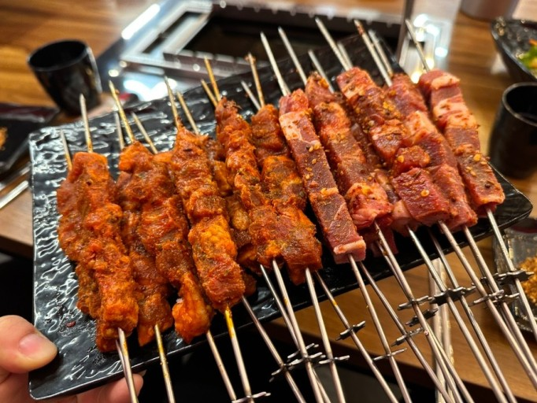

 양고기 구세계[10]에서 양고기가 주요하게 생산되어 소비되는 국가들의 공통점은 지리적 요인 때문에 양을 많이 키웠다는 점이다. 강수량의 차이나 치안 문제[11]가 핵심이었다. 농경 문명이 안정적으로 자리를 잡게 되면 더욱 우수한 생산성과 범용성을 지닌 목화 같은 면직물이나 삼(식물), 아마 등 마직물을 생산할 수 있게 되기 때문에 상대적으로 양의 가치가 떨어져서 양의 사육 비율이 낮아지는 반면, 외적의 침략이나 강수량 문제 등으로 농경이 안정화되기 어려운 사회에서는 동물 가죽이나 털을 이용할 수밖에 없으니 상대적으로 양의 가치가 상승하여 양의 사육 비율이 높아지는 것이다. 한중일을 중심으로 한 동아시아의 경우 일찍부터 견직물이라는 변수가 크게 작용하고 있었다. 그러다보니 자연스럽게 농경 문명이 빨리 자리를 잡은 곳에서는 양의 필요성이 낮아지면서 자연스럽게 양고기의 섭취율도 떨어졌지만 반면 북아시아의 건조 지대나 침엽 수림 지대에서는 양의 필요성이 높아지면서 자연스럽게 양고기의 섭취율도 증가하였다. 이는 현대로 이어져 농경 문화가 우세했던 지역에서는 양고기의 보급률이 낮은 반면 반농반목이 자리잡았던 지역에서는 양고기의 보급률이 높은 편이다. 농경 문화가 빨리 자리잡은 지역에서 중요하게 여긴 동물은 농업 생산량에 도움이 되면서 여러 부가물들을 제공해주는 소의 비중이 더 높았고 이 때문에 양 대신 소고기 및 돼지고기 섭취 문화가 더 널리 자리잡았다.[12] 양고기가 대중화된 지역들은 현재까지도 척박한 땅에 부족한 강수량[13]이나 일조량[14] 등으로 인하여 농사를 짓기 좋은 조건이 아니다. 이 때문에 양에게 의존하지 않으면 생존이 어려웠고, 때문에 양고기 섭취 문화도 오랫동안 남아있었던 것이다. 한편 사막 지대인 서아시아나 북아프리카 또한 양을 많이 키웠다. 중동이야 농경이 세계에서 가장 먼저 시작된 지역이었으나 장기간의 농경으로 인한 토양의 염화로 건조 지역이 늘어났는데 건조 지역의 경우 양에게서 털과 가죽, 고기와 뼈 등 유용한 것들을 구할 수 있었기 때문이다.[15] 게다가 사막은 해가 진 후에는 몹시 춥다 보니 양털이 필수품이기도 했다. 더불어 농경 문화가 빨리 자리잡은 지역이라고 해서 양을 필요로 하지 않았던 건 아니다. 겨울에는 마직물보다 양털이 더 방한 효과가 좋았고, 고기와 가죽 및 뼈 등의 부가물들은 덤으로 얻을 수도 있기 때문이다. 면직물이 온대 지방이 본격적으로 보급되기 시작한 것은 근세 이후이다. 반대로 양을 먹지 않는 지역들은 고온다습한 기후를 가지고 있는 경우가 많다. 대표적으로 인도 남부와 일본, 중국 남부 및 동남아시아 지역들. 인도나 중국에서 양을 자주 키우고 먹는 지역들은 위도나 고도가 높아서 서늘한 기후를 가진 지역들이다. 대표적으로 각각 히말라야 산맥 근처와 화북 지역이 있다.[16] 반면 남인도, 남중국 등 고온다습하며 쌀농사로 대규모 인구를 부양하는 인구 밀집 지역에서는 양고기보다는 돼지, 오리, 물소 등을 키워 먹는 편이다. 즉 농경문화 중에서도 벼농사/목화 재배와 상극인 게 양고기 문화이다. 근대 일본에서 홋카이도를 개척한 이후 양을 사육한 것만 봐도 답이 나온다. 또한 남중국, 독일, 오키나와 등의 사례를 볼때 양고기 문화의 대척점에 있는 육류 문화는 돼지고기 문화가 있다. 돼지는 기본적으로 온난한 기후와 풍부한 물, 일정한 정착지와 돼지를 먹이기에 충분한 식량이[17] 필요한데, 이는 양을 키우는 환경 조건과 정 반대의 조건들이다. 쉽게 말해, 돼지는 고온다습한 기후에 수자원이 풍부하며 대규모의 식량이 생산되어 많은 수의 정착민과 가축을 부양할 수 있는 지역의 주력 가축이며, 양은 건조한 기후에 상대적으로 적은 양의 물이 있으며 식량 생산에 한계가 있어 대규모 정착민과 가축을 부양하기는 힘든 지역의 주력가축으로 자리를 잡은 것이다. 이 때문에 돼지고기 문화 지역과 양고기 문화 지역은 겹치지 않는 경우가 많다. 한편으로 질병에 대한 저항력 또한 강한 영향력을 주기도 한다. 상술한 내용으로만 보면 건조한 지역에서 돼지를 못키우는 이유는 알 수 있지만 고온다습한 지역에서 양을 키우지 않는 이유를 이해하기 힘들 수 있는데 양의 원종인 산양부터 고온다습한 지역에서는 자연생식이 불가능하다. 그 이유는 고온 다습한 지역에 사는 식물들이 생성하는 알칼로이드 독성에 대한 저항력이 약해서 못먹는 풀이 많고, 무엇보다 질병에 대한 저항력이 낮다. 돼지는 고온다습한 지역에 적응한 생물이므로 각종 바이러스와 세균들의 번식최적지인 정글지역에서도 엄청나게 잘 견디며 살지만 양은 두꺼운 털에서 알 수 있듯이 추운 툰드라 지역에서 적응한 생물이므로 세균에 대한 저항력에 큰 영향을 받지않고 진화한 생물이므로 이런 지역에서 사육하면 각종 곰팡이와 질병에 시달리다가 금새 전염병으로 번져 전멸해버리기 일쑤다. 돼지고기 문화는 중유럽과 동아시아를 중심으로 한 대규모 농경 문명 지역들과 그 영향을 받은 지역들에 퍼져있으며, 양고기 문화는 서아시아와 북아프리카, 중앙아시아를 중심으로 한 유목민 문명 지역들과 그 영향을 받은 지역들에 퍼져있다. 이는 종교적 특성으로도 나타났다. 양고기 문화권 종교인 유대교와 이슬람교 그리고 북인도 지역의 힌두교가 돼지고기를 불결한 음식 취급을 하며 섭취를 금기시하는 반면, 이런 양고기 문화권 종교에 그 기원을 둔 그리스도교는 예수의 메시지와 베드로 등의 선교로 돼지고기 섭취를 허용하도록 바뀌었다.